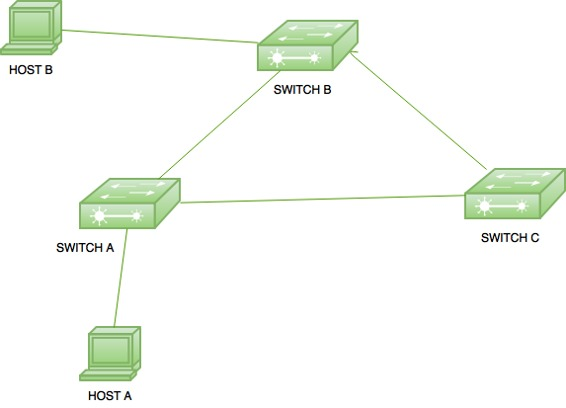
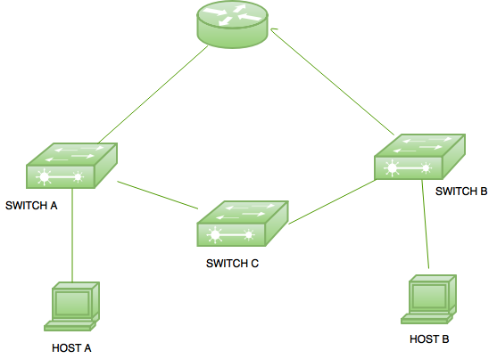
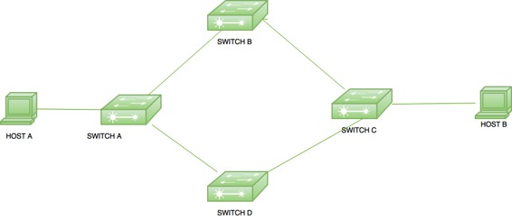

Basically, redundant links are used to prevent nasty network failure. These are used to provide redundancy, i.e back up when a link fails, i.e a frame can be forwarded out through another path but it can cause problems also.
Here are some of these problems:
Broadcast Storm –
A switch forwards out the broadcast frame, generated by another device, to all its ports. If no loop avoidance schemes are applied then the switches will flood broadcasts endlessly throughout the network which consumes all the available bandwidth . This phenomenon is called broadcast storm.
Broadcast storm is a serious network problem and can shut down entire network in seconds.
Example:

Here, there are 3 switches connected to each other in order to provide redundancy. When host A generate a broadcast for host B, it is first received by switch A which in turn floods the traffic to all its ports. As switch B and Switch C is also connected to switch A therefore, these switches also receives the broadcast frame and floods the frame through all its ports.
As a result, switch A and switch C will also receive the broadcast frame generated by switch B. Also, switch C will also generate broadcast frame for switch B and switch A. This will result in a loop which will consumes all the available bandwidth and can lead to shut down of a network.
Multiple copies –
A device can receive multiple copies of the same frame if a frame arrives from different network segments at the same time.
Example:

Here is a small topology in which a router is connected with 2 switches. Switch A is connected to host A and switch C. On the other hand, switch B is connected to switch C and host B. Suppose, if host A wants to send a unicast frame to router then it will forward out the frame to switch A. Switch A in turn forward out it to router and switch C. At this time, router will receive the packet.
But switch C in turn forwards the packet to Switch B and Switch B will forward it out to router. At this time, router will receive the multiple copies of a single frame. This is a problem as most protocols cannot correctly handle duplicate transmissions.
MAC table thrashing –
Switches use MAC address table to forward out the frames. When a switch receives a frame, it makes an entry of the device mac address with the switch port on which the frame is received but if the switch receives the frame from same destination from more than one link then it will be confusing for switch to make an entry in the MAC table. It will lead to unstability of MAC table.
Example:

In the given topology, if host A sends a unicast frame for host B then switch A will receive the frame. Switch A will forward it out to both switch B and switch D which in turn both forward it out to switch C. Now, switch C will receive the frame on two different ports with same source mac address therefore it will lead to unstability in the MAC table in switch C. Spanning Tree Protocol (STP) is used to prevent these loops. It will block down a (port) path using its own mechanism by which a single path is available for a frame delivery at a time. If one path goes down, then the blocked path becomes active and frame transmission can take place from that path (in switches).